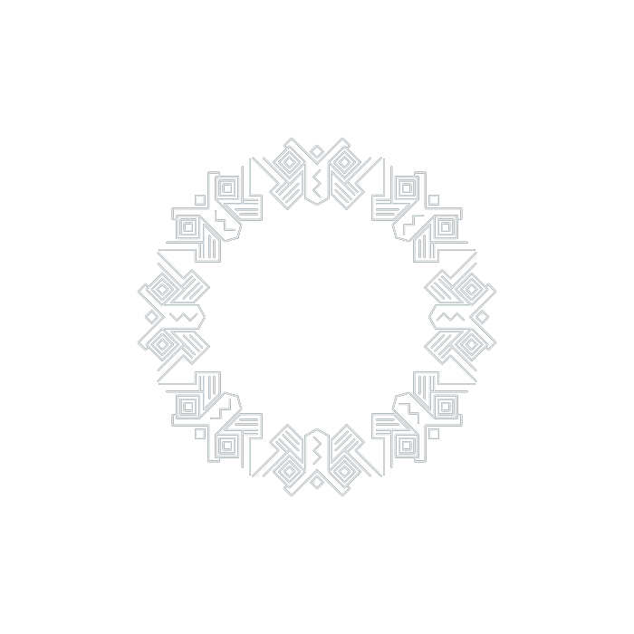

蝴蝶歌是流传于广西富川瑶族自治县的瑶族多声部民歌，用当地瑶语演唱。 演唱时由两人或两组分声部同时进行，两个声部同起同收， 声部之间既有区分又始终贴合。
它的音乐特征见诸官方记录：和声以大小三度为主， 也常出现长时值的大二度，然后解决到同度。听感上，两个声部由分开走向合一。
歌名来自歌词中的衬词「蝴的蝶」。当地与媒体报道常以「翅膀」作比， 广西日报 2023 年 1 月的报道称它为「流淌在翅膀上的山歌」。
富川瑶族自治县瑶族多声部民歌，2008 年列入第二批国家级非物质文化遗产名录（项目序号 61，编号 Ⅱ-30，扩展项目）。因衬词「蝴的蝶」得名，两个声部同起同收，被称作「流淌在翅膀上的山歌」。

蝴蝶歌是流传于广西富川瑶族自治县的瑶族多声部民歌，用当地瑶语演唱。 演唱时由两人或两组分声部同时进行，两个声部同起同收， 声部之间既有区分又始终贴合。
它的音乐特征见诸官方记录：和声以大小三度为主， 也常出现长时值的大二度，然后解决到同度。听感上，两个声部由分开走向合一。
歌名来自歌词中的衬词「蝴的蝶」。当地与媒体报道常以「翅膀」作比， 广西日报 2023 年 1 月的报道称它为「流淌在翅膀上的山歌」。
蝴蝶歌由两人或两组分声部演唱，两个声部同起同收。 衬词是这首歌显著的听觉标志，演唱中大量使用「蝴的蝶」等衬词， 既填补乐句，也构成节奏。
传统上，蝴蝶歌多在节庆、歌会与日常劳作场合演唱， 是当地瑶族社交生活的一部分。近年来它也进入展演与比赛舞台， 并入选中国原生民歌节等全国性活动。
传承上，富川当地代表性传承人欧玉梅（第四代，白沙镇）等人 通过交流与实践探索蝴蝶歌与现代音乐的融合，吸引年轻人参与。
两个声部同时开始、同时结束，中途各自展开。这是蝴蝶歌的基本形态。
长时值的大二度音程解决到同度，被记为富川瑶族音乐独有的特点， 也是它在音乐学上最受关注之处。
蝴蝶歌已被用于传唱非传统内容，如广西纪检监察网 2021 年报道的「蝴蝶歌唱出廉政好声音」。
《广西瑶族多声部民歌和声特征研究——以蝴蝶歌〈流水欢歌迎客来〉〈情郎下海我下海〉为例》（《黄河之声》2022 年第 8 期）等。
蝴蝶歌的现存记录以曲谱、录音与影像为主，未见传统纹样类实物。网络上流传的「蝴蝶纹样」没有可靠出处。
| 内容 | 说明 | 来源 |
|---|---|---|
| 名录级别 | 第二批国家级非遗（2008），项目序号 61，编号 Ⅱ-30，扩展项目；申报地区广西富川瑶族自治县 | 国务院第二批国家级非物质文化遗产名录；ihchina.cn/project_details/12474.html |
| 和声特征 | 和声音程以大小三度为主，经常出现长时值的大二度音程，然后解决到同度 | 中国非物质文化遗产网官方项目页原文 |
| 报道用语 | 「流淌在翅膀上的蝴蝶歌」 | 广西日报 2023-01-11；国际在线同期报道 |
| 代表性传承人 | 欧玉梅（第四代，富川白沙镇） | ihchina.cn/ccr_detail/29903.html |
| 音乐本体研究 | 《广西富川瑶族合唱作品〈蝴蝶歌〉音乐本体研究》 | 《黄河之声》 2022 年第 14 期 |
| 当代融合实践 | 传承人探索蝴蝶歌与现代音乐的融合，吸引年轻人加入 | 搜狐文化 2025《以喉为「翅」唱响融合新旋律》 |
| 非音乐场合使用 | 富川：蝴蝶歌唱出廉政好声音 | 广西纪检监察网 2021-12 |